Bomberos de Barcelona realizó el año pasado 16.686 servicios , 694 menos que en 1999.

Un repaso a las estadísticas revela que el descenso de la cifra total se debe a que han disminuido las asistencias técnicas que en 1999 se desbordaron por las revisiones de fachadas.
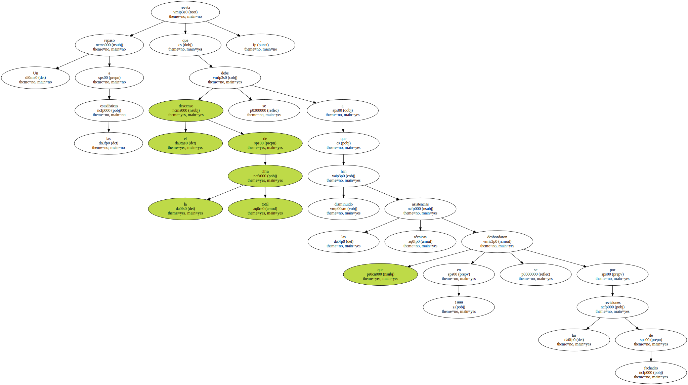Los actos vandálicos en la vía pública se mantienen con un ligero incremento y ya representan la mitad de los incendios que se producen en la ciudad.
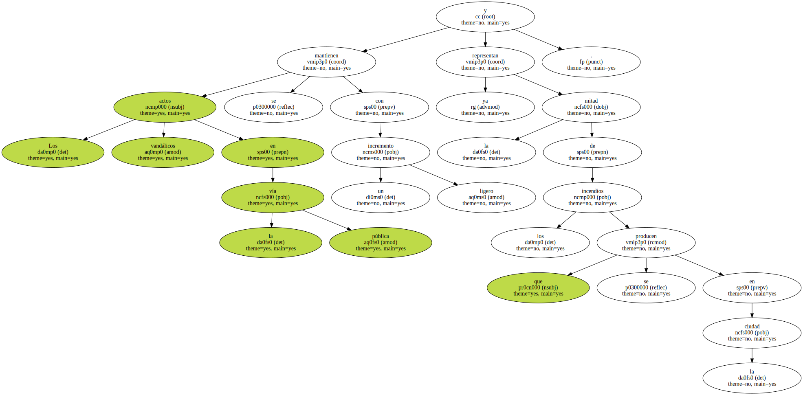Tanta es la incidencia de los incendios en la vía pública que , desglosando los servicios por día de la semana , los sábados son los días que acumulan más salidas de los bomberos.

" Los incendios provocados en contenedores , coches y motos se producen mayoritariamente las noches del fin de semana " , explica el jefe de los bomberos , Jordi Murtra.
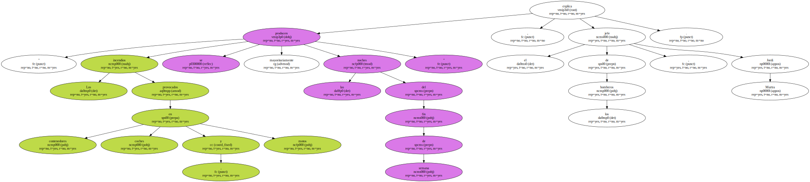DAÑOS ECONOMICOS Y ALARMA.
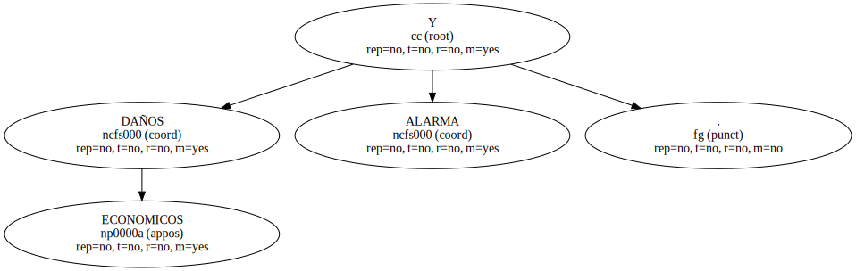En el 2000 ardieron 1.078 contenedores y 493 vehículos en incendios provocados que , a juicio de Murtra , ya no pueden ser calificados de simples gamberradas.
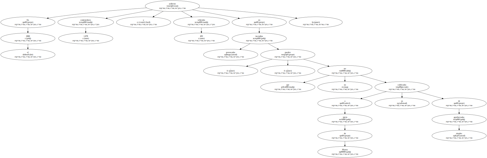" Además de cuantiosos daños económicos , estos incendios crean mucha alarma y situaciones de riesgo " , apunta el jefe de bomberos.
Algunos de estos fuegos afectaron a persianas de viviendas.
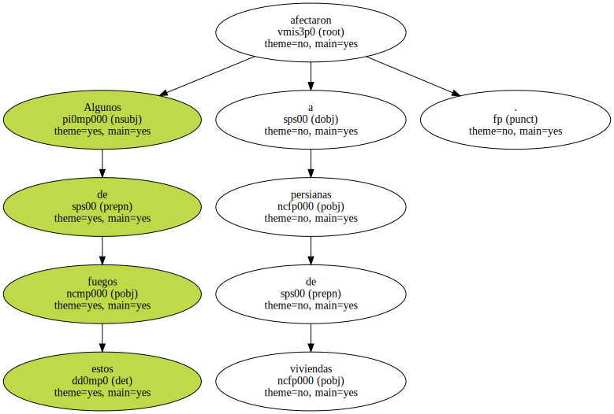En el mismo periodo se declararon 1.299 incendios en viviendas.
" El 90% fueron por culpa de imprudencias , falta de prevención y de medidas de seguridad . Estos fuegos se podían haber evitado " , añade Murtra.
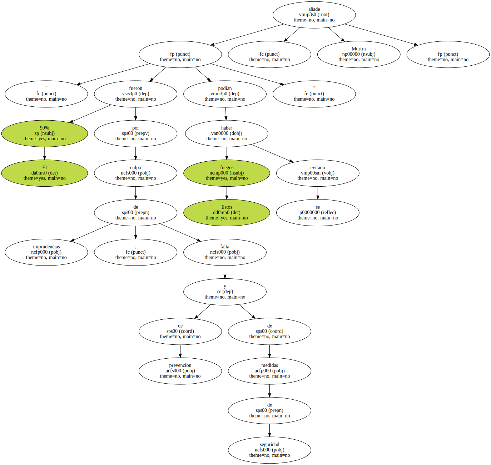En tres de los siniestros se produjeron víctimas mortales : un pintor de la Rambla que vivía a pocos metros de la calle de Escudellers y se quedó dormido , y dos niños en sendas casas de Ciutat Vella.
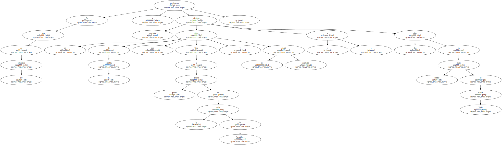MENOS DE 10 MINUTOS.
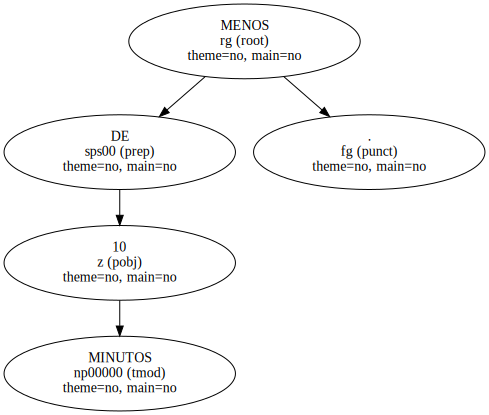Murtra destaca que en el 95% de los servicios , tanto incendios como salvamentos , los bomberos llegaron al lugar antes de 10 minutos.
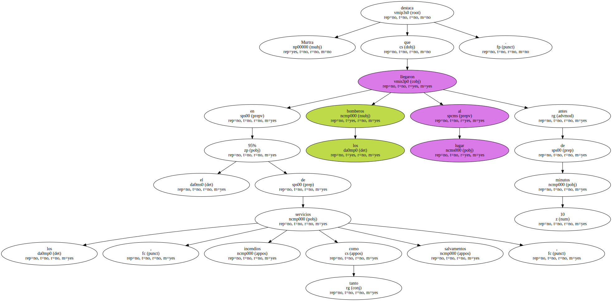Por distritos , el del Eixample , con 3.231 salidas , es el que acapara la mayoría de requerimientos a bomberos.
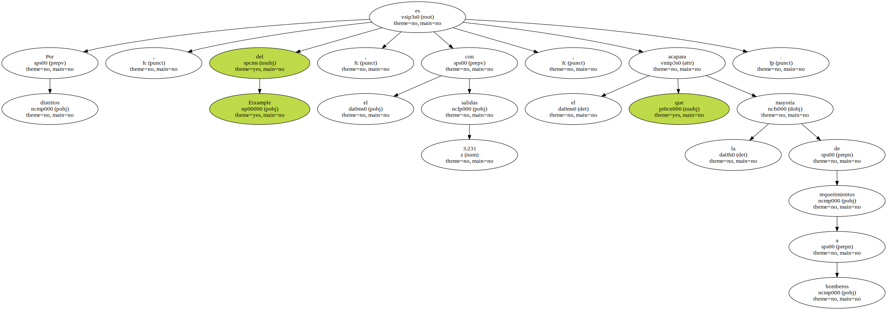Por eso , el parque central de bomberos de la calle de Provença realizó el año pasado el mayor número de salidas : 7.586.
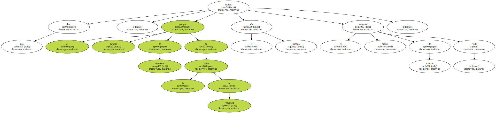Este parque , además , apoya al resto de cuartelillos ante un gran siniestro.
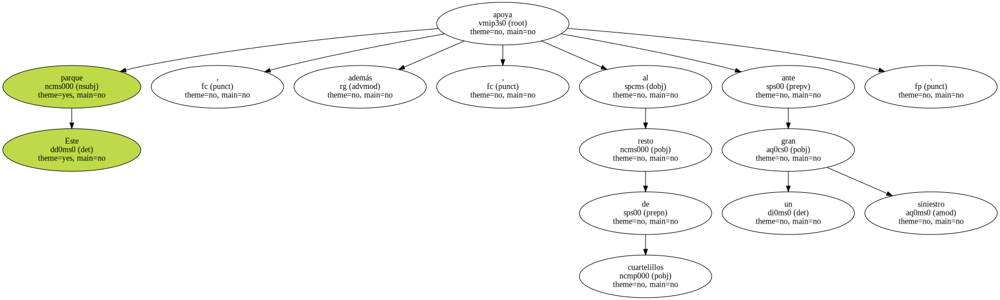